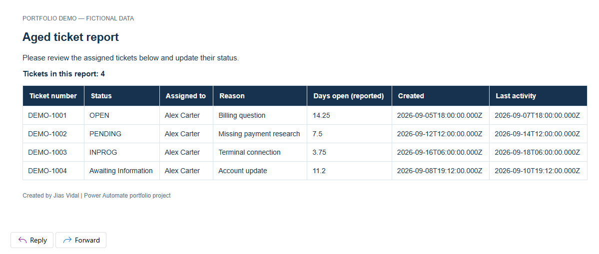
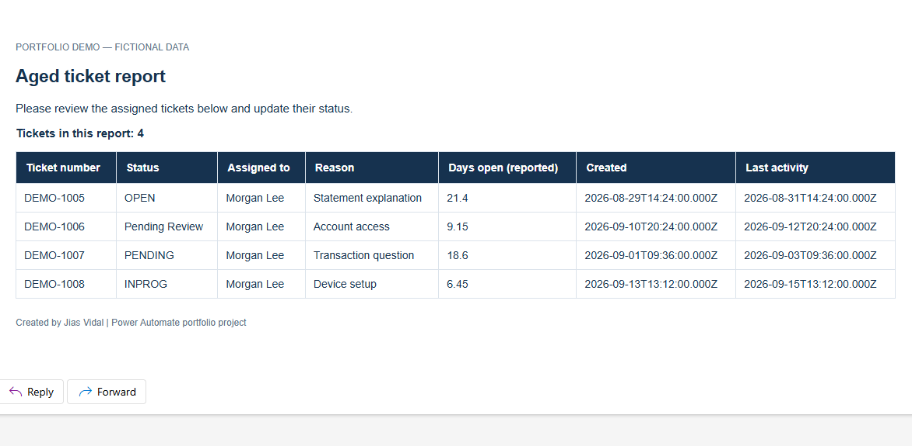
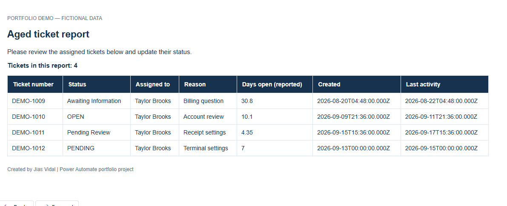
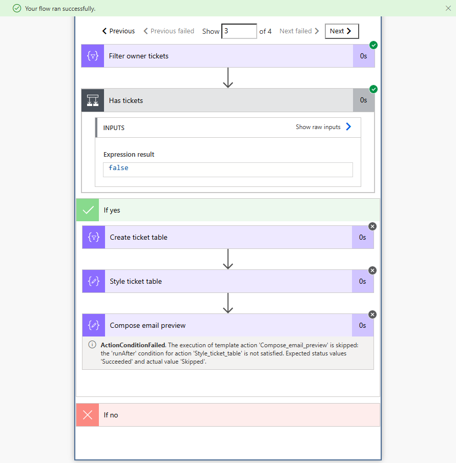

Alex Carter
4 tickets · DEMO-1001–1004
Power Automate · Excel · Outlook
An automated report for each ticket owner, built from one Excel workbook. A portfolio recreation of my support operations work, tested with entirely fictional data.
01 / The problem
Preparing aged-ticket follow-ups manually means reviewing a shared report, finding each owner’s tickets, and assembling separate messages. Repeating those steps adds administrative work to an already busy support queue.
I built a Power Automate workflow to read ticket data, match it to owners, and prepare a consistent email for each person with assigned tickets.
02 / How it works
Run the flow when the sample report is ready.
Load the EMAILS owner table and DATA ticket table.
For each owner, filter tickets by assigned email.
Continue only when the matched ticket count is above zero.
Create an HTML table, apply formatting, and assemble the message.
Send each demo report to my own inbox through Outlook.
This flow distributes the supplied ticket report. It preserves the reported ages and statuses and does not apply an additional age cutoff. Fictional owner email addresses are matching keys; they are not delivery destinations.
03 / Verified results
Actual screenshots from the portfolio test: all 12 tickets appeared in the correct owner’s report.
4 tickets · DEMO-1001–1004
4 tickets · DEMO-1005–1008
4 tickets · DEMO-1009–1012



The empty-owner check
Sam Rivera has no matching tickets. The condition evaluated to false and the report actions were skipped. The overall run succeeded.
This check keeps empty reports out of the inbox.

04 / Explore the project
The workbook and guide explain the same owner-matching logic used in the tested flow.
12 fictional tickets and four owners, organized into the two named Excel tables.
Download Excel workbook ↓Action names, expressions, report columns, and expected results for building your own flow.
Download setup guide ↓The workbook, setup guide, and introductory README together in one ZIP file.
Download demo kit ↓Requires your own Microsoft 365 work or school account with access to Power Automate, Excel Online (Business), and Office 365 Outlook. This kit is a manual build guide, not an importable flow. Each run sends a new report set; it does not track previous sends.
Support experience → Practical automation
{kind=link}
{kind=link}
{kind=link}
{kind=link}